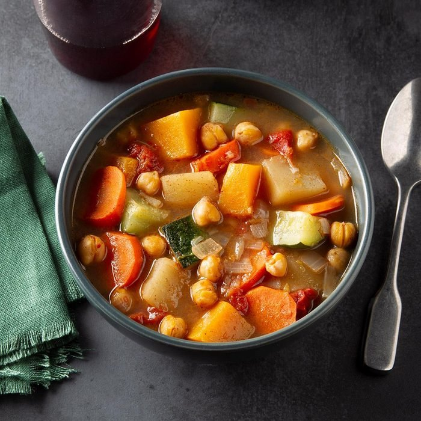

Chop and Drop Power Up Stew

Need a POWER UP?
Chop and Drop Power up Stew is the perfect pick me up recipe. Its filled with healthy nutrients and its SUPER
easy to
make! No need for bothersome measurments or precise times. So put away the measuring cups and timers and get
ready to get POWERED UP with Chop and Drop Stew!
Ingredients
- 2 boxes of Vegetable Broth(64 oz.)
- 1.5 liters of Spring Water
- 1 Zhuccini
- 1 Squash
- 1/2 Butternut Squash
- 1 box Baby Bella Mushrooms
- 3 Roma Tomatos
- 1 Bell Pepper
- 1 onion
- 3 cans Chick Peas(Or whatever kind of beans or lentils you like)
- 2 cups Dried Quinoa
- 1/2 box (1/2 pound) Rotini Noodles
- Spices of your choice
Steps
- CHOP and DROP!Chop vegetables
into desired size and put them all in the large pot with vegetable broth and water(everything except quinoa
and noodles)
- Add spices
- Cover pot and bring to a boil
- Cook quinoa in seperate pot
- After about 45 minutes add noodles
- Add Quinoa
- Eat and get POWERED UP!
POWERFUL hints and tips
- For spices you can try-Italian Seasoning, Oregano, Black Pepper, Garlic Powder, and Tumeric. If you like
spicy food you can add Paprika and Chili Powder. I usually use mostly Italian Seasoning. Just cover the
whole top of the vegetables floating on the top with a good coat of italian seasoning and whatever other
spices you think would taste good then stir it all up
- You can change up the ingredients however you like or whatever is easiest- Try putting in some sweet potatos
- You can use whatever kind of canned or dry beans or lentils you like. If you use dry beans just cook however
long it takes but make sure they are done(most beans or lentils will be finished in an hour but some might
take longer)
- If you want to make things SUPER easy you can cook the quinoa in the large pot with
everything else. I like doing it seperate and adding the quinoa when the large pot is completely done so the
quinoa keeps a good texture
- You can use rice instead of quinoa